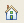

Brug den grafiske brugergrænseflade i informationscentret til at finde og få vist produktdokumentationen.
Skillebladet Indhold ( ) nederst i oversigten viser titlen på emnerne i informationscentret. Titlerne vises i en indholdsfortegnelse eller et navigeringstræ. Vælg en emnetitel i navigeringstræet for at får vist indholdet af emnet.
) nederst i oversigten viser titlen på emnerne i informationscentret. Titlerne vises i en indholdsfortegnelse eller et navigeringstræ. Vælg en emnetitel i navigeringstræet for at får vist indholdet af emnet.
Klik på Gå tilbage ( ) og Gå frem (
) og Gå frem ( ) for at navigere i historikken over de emner, du har fået vist.
) for at navigere i historikken over de emner, du har fået vist.
Klik på Hjem () for at åbne startsiden for informationscentret.
Klik på skillebladet Indhold () nederst i oversigten for at at vende tilbage til oversigten Indhold efter at have udført en søgning.
Når du klikker på et link inden for det emne, du får vist, vises et nyt emne, og navigeringstræet bliver automatisk ændret, så det afspejler placeringen af det nye emne vha. standardindstillinger.
- Find det aktuelle emne i navigeringstræet, klik på Vis i indholdsfortegnelse (
 ) på værktøjslinjen i indholdsoversigten.
) på værktøjslinjen i indholdsoversigten. - Sørg for, at navigeringstræet og emnedelvinduet hele tiden er synkroniserede. Klik på Link til indhold (
 ) på værktøjslinjen i indholdsoversigten. Klik på knappen igen for at deaktivere funktionen.
) på værktøjslinjen i indholdsoversigten. Klik på knappen igen for at deaktivere funktionen.
Du kan finde oplysninger om navigering med tastaturet i Tastaturgenveje og genvejstaster.